💖 Gustos
TABLA SOBRE MIS FRUTAS FAVORITAS
|
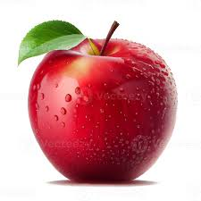 |
"🍎Manzana" postre favorito para comerla es en ensalada de Manzana |
|||
|---|---|---|---|---|
|
|
|
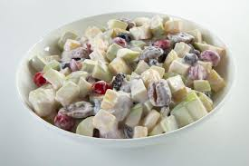 |
|
| 🍎Tipos de Manzana | 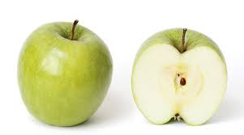 |
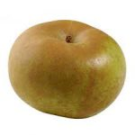 |
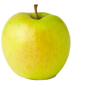 |
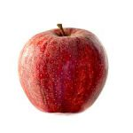 |
|
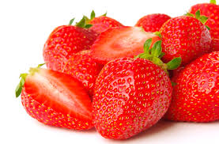 |
"🍓Fresas" Mi postre favorito para comerla es en Fresas con crema |
|||
|
|
|
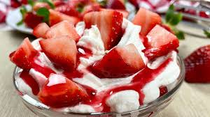 |
|
| 🍓Tipos de Fresas |  |
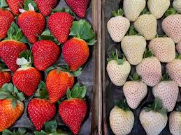 |
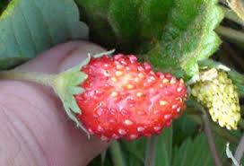 |
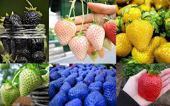 |
Me gusta tener mascotas, en lo general prefiero los perritos
- En especial esta raza: Cocker Spaniel
-
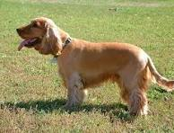
-
Características, cuidados y curiosidades de esta adorable raza.
🐾 Características principales:
- Origen
- Reino Unido
- Popularizado en el siglo XIX
- Usado como perro de caza
- Popularizado en el siglo XIX
- Reino Unido
- Temperamento
- 😊Amigable
- 🧠Inteligente
- 🏃Activo
- Colores comunes
- ⭐Dorado
- ⚫Negro
- 🏅Tricolor
👪 Cuidados esenciales
- Alimentación balanceada
- Ejercicio diario
- Visitas al veterinario
- Higiene
- Baño mensual
- Cepillado frecuente
📸 Imágenes del Cocker Spaniel
Algunos de ellos
🔗 Vinculos para mayor Información
- Me gusta leer
- Me gusta ver kdramas
- Origen